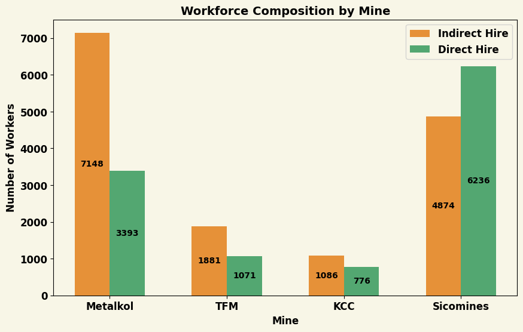

The True Cost of Electric Vehicles
By Sulekha Kishore, Anagha Satish, and Edward Speer
CS/IDS/VC 162, WI '25

The exponential rise in U.S. EV registrations in the last decade. Source: IEA Global EV Outlook 2024 [1]
Electric vehicles (EVs) have seen massive increases in sales, news coverage, political importance, and regulatory attention in the last decade as the worrying effects of climate change due to \(CO_2\) emissions become abundantly clear. Adoption of this “green” alternative to traditional internal combustion engine (ICE) vehicles is touted as the most climate-friendly option. However, there are hidden costs to people and the environment in the production process of the lithium-ion batteries required for EVs and in the carbon emissions of the energy generation methods that power EVs. In an effort to understand the full social and environmental impact of the electrification of transportation, we conducted an investigative data analysis to determine the true cost of electric vehicles, compare EV costs to the cost of ICE vehicles, and explore strategies for charging consumers the true cost of their transportation choices.
In this article, we will build up the true cost of EVs by exploring the different components that contribute to the social and environmental costs of EVs. We seek to answer,
“What if we priced internal combustion engine and electric vehicles to include all social (mining & labor) and environmental costs?”
We will first investigate the human labor and mining costs of cobalt, the primary mineral used in lithium-ion batteries. To determine the human costs, we will look at the direct and downstream costs of labor of mineral/metal mining for batteries required in electric vehicles as compared to those for ICE cars. We will then investigate the carbon emissions of the energy generation methods that power EVs and compare them to the carbon emissions of burning gasoline. Finally, we will explore strategies for charging consumers the true cost of their transportation choices, including direct intervention on vehicle sticker prices as well as cumulative carbon tax policies.
Drilling Down Deep
While electronic devices — phones, laptops, and yes, EVs — are symbols of modern technology, the rechargeable batteries they rely on are built on the backs of an exploitative system for labor. We first investigate the human labor and mining costs of cobalt, the primary mineral used in lithium-ion batteries. To determine the human costs, we will look at the direct and downstream costs of labor of mineral and metal mining for batteries required in electric vehicles as compared to those for ICE cars.

This shiny metal, cobalt, is at the core of the rise in demand for lithium-ion batteries. Pictured above: Pure (99.9 %) cobalt chips, electrolytically refined, as well as a high purity (99.8 % = 2N8) 1 cm3 cobalt cube for comparison. Credit: Heinrich Pniok
The most important component of an EV is its battery and cobalt is one of the three principle minerals used in the manufacturing of all lithium ion rechargeable batteries. 60% of the world’s cobalt comes from the Democratic Republic of the Congo (DRC), a country in Central Africa. The DRC has seen a massive boom in industrial mining in the past decade as billions of dollars from multinational corporations have streamed into the country as the financial profits of cobalt mining became increasingly evident. Today, the majority of mining companies in the DRC are Chinese, following a 2009 agreement signed by then-President Joseph Kabila. This deal granted the Chinese government access to the country's copper-cobalt mines in exchange for billions of dollars in aid, loans, and infrastructure projects. As a result, Chinese state-owned and state-backed companies now control 70% of the DRC’s mining sector [5].
Numerous independent investigations by both Congolese and international organizations have highlighted the dire conditions and exploitative labor practices in cobalt mines. These reports extensively document cases of worker mistreatment, human rights violations, and child labor within these mining operations [4].
While the final product, a lithium-ion battery may seem innocuous, this product is the result hundreds of thousands of workers laboring in extremely dangerous environment. Picture: An artisanal miner carries a sack of ore at the Shabara artisanal mine near Kolwezi, DRC, on Oct. 12, 2022. Image Credit: Junior Kannah/AFP via Getty Images
Cobalt Mining: An Exploitative Labor System
We focus on the data presented in the November 2021 report “The Road to Ruin? Electric Vehicles and Workers’ Rights Abuses at DR Congo’s industrial cobalt mines,” written by Rights and Accountability in Development (RAID), a UK-based NGO “exposing corporate wrongdoing, environmental harm and human rights abuse.” In partnership with Centre d’Aide Juridico-Judiciaire (CAJJ), a Congolese legal aid centre specialized in labor rights, this report was the result of over 2 years of investigation and 130 interviews with current and former workers at 5 industrial mines in the DRC [9].

Some 20,000 people work at Shabara artisanal mine in the DRC, in shifts of 5,000 at a time. Image Credit: Junior Kannah/AFP via Getty Images
In 2020, these 5 mines produced “approximately 40-45% of the global supply of cobalt, much of it destined for the world’s automotive manufacturers” (p 17). These mines are all owned or operated by multinational mining companies,
- Glencore’s Kamoto Copper Company (KCC)
- Eurasian Resources Group’s Metalkol RTR
- China Molybdenum’s Tenke Fungurume Mining (TFM)
- China Nonferrous Metal Mining Company (CNMC)’s Société Minière de Deziwa (Somidez), in which the Congolese state company Gécamines holds a 49% stake
- Sino-Congolaise des Mines (Sicomines), a joint venture between Gécamines and a consortium of Chinese companies and investors.
The Subcontracting Model
With a focus on these five largest industrial cobalt mines discussed in the RAID report, we investigate the cost of paying workers in DRC a living wage. The report documents that currently, many workers do not earn a living wage, “have little or no health provisions, and far too often are subjected to excessive working hours, unsafe working conditions, degrading treatment, discrimination and racism” (p 3). The exploitation of workers stems largely from the subcontracting model used by multinational mining companies. Instead of hiring directly, they rely on indirect hires through subcontractor companies to source their labor, from miners to support staff. The RAID report’s interviews with workers and managers suggest this model is designed to cut costs, limit liability, and restrict unionization.
This system of subcontracted labor creates a system in which the majority of workers in the DRC are not afforded a steady income, benefits such as time off or health, nor protections of their labor rights.

There are two umbrellas of types of workers,direct and indirect hire. Indirectly hired workers are further broken down into temporary and daily workers, with further diminished rights and wages.
While subcontracting is standard for short-term or specialized roles, evidence suggests mining companies in Congo rely on it for core operations, paying extremely low wages. The legal minimum wage in the DRC is 7,075 Congolese Francs per day or 172,630 per month. While most directly employed workers at KCC, Metalkol, Sicomines, and TFM earn above a living wage, Somidez employees reported an average monthly salary of just $355. However, workers hired through subcontractors fare worse, earning an average of $330.10—well below the $402 monthly living wage estimated for the Kolwezi area, the primary location of cobalt mining in the DRC. This living wage estimate by the RAID report used the Minimum Expenditure Basket (MEB) methodology developed by humanitarian agencies to assess the basic needs of populations in emergencies. The MEB identifies the monetary requirements to meet basic needs of a household on a regular or seasonal basis and their average costs.
Overall, the majority of workers (57%) are indirect hires, who are routinely paid less for their labor with little job security, benefits, nor healthcare.
Using data from the RAID report, at least 26,455 workers are employed at the 5 mines of interest, with 57% hired through subcontractors (categorized as indirect hires) —rising to 68% at TFM and 64% at Metalkol in 2020. This means that more than half of the workers at these mines are at the mercy of the subcontracting firms to find work and “are generally poorly paid, undertake physically punishing work for long shifts, receive minimal healthcare coverage with limited or no cover for their families (despite it being required by Congolese law) and are frequently denied their entitlement to paid leave” (p 26). Moreover, these workers have no rights to time off and are routinely paid less than direct hire employees.
TODO: Sulekha?
Paying a Living Wage
We will now calculate the cost of paying all mining workers in the DRC. In the DRC, the maximum working week is capped at 45 hours, as stipulated by the Congolese Labour Code (art. 119). Any work done outside these hours is considered overtime and must be compensated at a higher rate. In the mining sector, however, many workers, especially subcontracted ones, work longer hours and are not granted any form of overtime pay. For example, workers on a typical “6-3” schedule—working 9am to 9pm for three days, then 4am to 4pm for three days, followed by three days off—exceeding the standard 45-hour week. For the purposes of our calculations, we will assume subcontracted workers work 56 hours per week with no overtime compensation. In contrast, direct hire workers will be assumed to work only 45 hours per week.
-
Direct Hire Workers: Using the minimum “living wage” of
$402 per month in the Kolwezi area, as calculated by
RAID and CAJJ using an internationally recognised
methodology, Let's consider a direct hire worker earning
$402 per month. Assuming they work a full 45-hour week:
- Annual salary: $402 \(*\) 12 months = $4,824
- Annual hours worked: 45 hours/week \(*\) 52 weeks/year = 2,340 hours/year
- Hourly wage: $4,824 / 2,340 hours = $2.06/hour
-
Indirect Hire Workers: Subcontracted workers, however,
typically work 56 hours per week. Using the same
$402 monthly salary:
- Annual salary: $402 \(*\) 12 months = $4,824
- Annual hours worked: 56 hours/week \(*\) 52 weeks/year = 2,912 hours/year
- Hourly wage: $4,824 / 2,912 hours = $1.65/hour
Note that the hourly wage for indirect hires is even lower than that of direct hire workers, and these workers are often subjected to worse conditions, including lack of healthcare, time off, and other benefits required by Congolese law.
Next, we consider the scale of cobalt production for use in batteries in the DRC to find the additional cost per electric cost if we evenly divide the additional money necessary to pay workers a living wage as calculated above.
-
Global Cobalt Supply in 2020:
- The five mines in the study account for approximately 45% of the global cobalt supply, which is primarily used for automotive manufacturing.
-
Global Supply from DRC:
- 74% of the global cobalt supply comes from the DRC.
- 61% of DRC’s cobalt is produced by the five mines discussed in the report.
-
Cobalt Production and the Five Mines:
- The RAID report indicates that these five mines produce 59,502 tonnes (59,502,000 kg) of cobalt.
- For the entire DRC, we scale this up to reflect the total production: \[59502000\;\text{kg} \times \frac{5}{3} = 99170000\;\text{kg}\]
- Therefore, 99,170,000 kg of cobalt is produced annually in the DRC.
-
Cobalt for EV Batteries:
- A typical EV battery uses 14 kg of cobalt [1]
- Thus, the total number of EV batteries that could be produced from the cobalt mined in the DRC is: \[ \frac{99170000\;\text{kg}}{14\;\text{kg/EV}} = 7085714\;\text{batteries}\]
- Rounding, we find that the cobalt mined in the DRC produces 7,000,000 batteries.
Given this level of production, we now must ask how much we would have to charge at the EV dealership to pay for the additional cost of labor to pay all workers a living wage.
-
Number of Workers:
- There are 22,952 workers at the five mines.
- To scale this for all cobalt production in the DRC (since the five mines produce 61% of the cobalt), the total number of workers across all DRC cobalt mining is: \[22952 \times \frac{5}{3} = 38253 \text{miners}\quad \text{(approx. 38,000 workers)}\]
-
Current vs. Living Wage:
- The current daily wage for miners is about $3/day.
- Annually, that amounts to: \[3 \, \text{USD/day} \times 5 \, \text{days/week} \times 52 \, \text{weeks/year} = 780 \, \text{USD/year}\]
- However, the proposed living wage is $4,824/year.
- The gap is: \[4,824 \, \text{USD/year} - 780 \, \text{USD/year} = 4,044 \, \text{USD/year}\]
- Therefore, each worker needs an additional $4,044 annually.
- Total increase in spending for workers: \[38,000 \, \text{workers} \times 4,044 \, \text{USD} = 154,696,480 \, \text{USD}\]
Takeaways from paying a living wage
To provide a living wage of $4,824/year to all the miners producing cobalt in the DRC, the total increase in spending for the workers would be about $154.7 million. While this seems like a very large sum, given the scale of production of batteries, this would increase the price of each EV by approximately $43.67.
Thus, the cost of ensuring a living wage for miners producing cobalt in the DRC would have a relatively small effect on the final price of electric vehicles—only about $43.67 per car.
Pollution Costs
Mining for batteries also pose a deep threat for the surrounding environment, which in turn affects its inhabitants. Mining raw materials requires harsh chemicals and large amounts of water, often in areas where water is already scarce. We'll start with the carbon cost generated from the mining process [8].
- Research states that the mining of minerals required for a Tesla Model 3 battery is around 9,2000 kg of CO2 [8].
- Multiply by the social cost of carbon in the U.S, around $190 per tonne: \[92000 \text{kg CO2/ battery} \times 0.0478 \text{USD/ kg CO2} = $1747\,\text{per battery}\]
- Then, for a car with 2 batteries, we get an increase of $3494 in the cost of the EV.
The mining process poses further destruction to the nearby environment. Miners need to create heat between 800 and 1,000C, which requires the burning of fossil fuels. This hurts the local water supply and therefore affects the agricultural industry nearby. In an article in the National Library of Medicine, researchers talked to farmers in the Katangese Copperbelt in Central Africa, noting their struggle to obtain compensation for the costs of nearby mining. In this area, many farmers note the decrease in water quality. Specifically, between 2013 and 2014, they note the death of fish in the nearby river, and increased crop failure. The polluters have not responded to these concerns, however, 88% of the farmers interviewed voiced a need for the depollution of their area. They further state that they would accept, if offered, a compensation of $US 2820 per farmer [6].
Granted that 34% of the global cobalt supply is used for EV battery production [7], and that there are 30,000 farmers in the DRC impacted by mineral mining, then \[.34 * 2820\,\text{USD} * 300000\,\text{farmers} / 7000000\,\text{batteries} = 41 \,\text{USD/battery}\] This adds an additional $82 to the cost of each EV.
The Cost of Carbon Emissions
CO2 emissions are the primary environmental concern for the transportation industry. ICE vehicles have long been criticized for their high carbon emissions due to the direct burning of gasoline. However, the carbon emissions of the energy generation methods that power EVs are often ignored.
In order to dig deeper into the climate impact of EVs, we first assesed the current state of the energy generation methods used to power EVs in the United States. Drawing on the data available from the EPA's Emissions & Generation Resource Integrated Database (eGRID), we calculated the grams of carbon emissions per kWh of electricity generated in the United States as \[CO_2 = \frac{\bar{A}}{\bar{E}}\] where \(\bar{A}\) is the annual carbon emissions in grams and \(\bar{E}\) is the annual electricity generation in kWh for each power plant type. We then used this data to calculate the average carbon emitted per mile driven by an EV in the U.S based on the average energy efficiency of EVs sold in the U.S, and multiplied by the social cost of carbon to obtain an estimate of the cost of carbon emissions per mile driven by an EV, \(C_{EV}\). \[C_{EV} = SCC * \sum_{i}CO_{2_i} * \bar{\rho}\] where \(SCC\) is the social cost of carbon, \(CO_{2_i}\) is the carbon emissions per kWh of electricity generated by source \(i\), and \(\bar{\rho}\) is the average energy efficiency of EVs sold in the U.S. Note that as the number of electric vehicles on the road increases, the demand for electricity will increase, and the carbon emissions per mile driven by an EV will increase as well — meaning that just increasing the market share of electric vehicles will result in an increase in the cost of carbon emissions per mile for the EVs already on the roads. This value may be compared with an estimate of the cost of carbon emissions per mile driven by an ICE vehicle, obtained by multiplying the average fuel efficiency of ICE vehicles sold in the U.S by the social cost of carbon: \[C_{ICE} = SCC * \bar{\mu}\] where \(\bar{\mu}\) is the average fuel efficiency of ICE vehicles sold in the U.S.
The results of this analysis may be seen through the interactive plot below. The plot shows the cost of carbon, in cents per mile, broken up by both EV/ICE, as well as per energy source used to power EVs. Use the sliders at the bottom to adjust the energy generation mix and the percentage of EVs on the road to see how the cost of carbon changes. Use the checkboxes in the energy sources legend to toggle the inclusion or exclusion of different energy sources in the computation. The plot is initialized with the current energy generation mix and the current percentage of EVs on the road in the U.S.
The result of this comparison is clear. EVs are not only vastly more environmentally friendly than ICE vehicles, but they also have the potential to continue to improve in environmental impact as the energy generation mix in the U.S is shifted towards renewable energy source. Notice that well over 75% of the cost of carbon emissions for EVs comes from the burning of coal. Quick maths reveal that over the span of 100,000 miles, the current carbon costs of an EV are just of $12,000, while the carbon costs of an ICE over the same distance amount to over $750,000 — well over an order of magnitude difference. While an increase in the market share of EVs will increase the energy demands on the power grid resulting in a higher carbon cost per mile driven by EVs, the total cost of carbon emissions monotonically decreases as the mix of vehicles on the roads shifts towards electric.
Note that this analysis has thus far used average values for power efficiency and battery mineral content. In reality, these values are highly variable depending on the make and model of the vehicle. To understand and visualize the imporovement that can be made by switching to electric and selecting the most efficient options, we created the following plot which allows you to select any EV model from model year 2024 and see how the cost of carbon emissions from that vehicle ramps over time in comparison with the average ICE.
Note that while, due to the hidden carbon cost of mineral mining, EVs are initially more expensive in carbon price, the break even point for all vehicles (even the very least environmentally friendly Hummer pickup EV), the break-even point is well below the life expectancy of the vehicle. On average, the break-even value is less than 50,000 miles.
Note that reflecting the true cost of carbon emissions into vehicle prices for consumers now will not only incentivize the purchase of less carbon-intensive vehicles, but also drive the market towards a more sustainable energy generation mix. Given that the social cost of carbon decreases significantly given renewable sources of energy (check out the per mile costs for primarily solar and wind power generation!), consumer costs could be significantly reduced by a shift towards renewable energy sources. This in turn could create economic and political pressure to drive the energy generation mix towards renewable sources, further reducing the cost of carbon emissions for all vehicles on the road. While we did not model this impact here, it is a clear feedback loop that could be further explored in future research.
Paying the Price
This investigation has shown that the true cost of consumer vehicles contains a number of different features, which may be divided roughly into two categories: costs incurred in the production of the vehicle, and costs incurred in the operation of the vehicle. Given this, we propose two strategies for charging consumers the true cost of their transportation choices.
Scenario 1: Sticker Price Only
The simplest way to charge consumers the true cost of their transportation choices is to directly intervene on vehicle sticker prices. The sticker price will need to reflect all relevant costs incurred during production and in ongoing costs, so that the vehicle should be priced with respect to expected emissions over the lifetime of the vehicle. Note that this estimate will be imperfect — fuel efficiency often declines as a vehicle ages — however, it is an adequate first approximation.
On this approach, then, the sticker price is \[P_{EV}=B_{EV} + \bar{L} * C_{EV}\] where \(B_{EV}\) is the base price of the vehicle including labor and emissions in production, \(\bar{L}\) is the expected lifetime of the vehicle in miles, and \(C_{EV}\) is the cost of carbon emissions per mile driven by an EV. The sticker price of an ICE vehicle would be calculated in a similar manner, with the base price and price of emissions replaced with the base price and cost of carbon emissions per mile driven by an ICE vehicle, respectively. Note that \(\bar{C}\) is a dynamic value that would change as the mixture of energy generation sources in the U.S changes. On average, an EV would cost around $63,000, while an ICE would cost about $64,500 — Note that this makes the EV the cheaper option to buy at the dealership.
Notice that this approach has both benefits and disadvantages. The primary benefit of this approach is that consumers would face strong incentives to purchase more responsible vehicles right up front, hopefully driving the market towards more sustainable electric vehicles rapidly when this policy is first implemented. However, the primary disadvantage is that this approach does not account for the ongoing costs of operating the vehicle — some consumers will be overcharged while others are undercharged, depending on their driving habits and the lifetime of the vehicle.
Scenario 2: Cumulative Dynamic Taxes
A more complex, but potentially more effective, way to charge consumers the true cost of their transportation choices is to intervene at two points in the vehicle lifecycle: at the point of purchase, and at the point of fueling. On this approach, consumers are charged the base price for their vehicle including the approapriate labor and emission prices in production, and then are charged a tax at the point of sale for fueling the vehicle. This tax would be dynamic for electric vehicles, changing as the energy generation mix in the U.S changes — but static for ICE vehicles, as the environmental impact of burning gasoline remains stable. Seeing the plot from aboce, we can understand this approach as implementing taxes in such a way that the price of fueling will cause the price line to follow the same slope as the cost line for vehicles over time. This would be akin to around
This strategy again has a number of benefits and disadvantages. The primary benefit of this approach is that it accounts for the ongoing costs of operating the vehicle, ensuring that consumers are charged the true cost of their transportation choices over the lifetime of the vehicle. Along with this benefit, the tax on fueling the vehicle is directly sensitive to the energy generation mix in the U.S, meaning that consumers will begin to push for political and corporate shifts towards sustainable energy sources to reduce their own costs. However, the primary disadvantage of this approach is that there is much less benefit for consumers at the point of sale of the vehicle to select for electric. This could slow the adoption of electric vehicles in the short term, as consumers are less incentivized to purchase electric vehicles right up front if they are unaware of the long-term benefit of doing so.
The Upshot
In conclusion, the true cost of consumer vehicles includes a number of different features, which may be divided roughly into two categories: costs incurred in the production of the vehicle, and costs incurred in the operation of the vehicle. We have shown that the true cost of electric vehicles is significantly lower than that of ICE vehicles even when accounting for the labor costs of cobalt mining and the environmental costs of carbon emissions. This analysis has focused only on lightweight passenger vehicles, but a similar analysis should be extended to heavy duty vehicles as well as to other types of vehicles - hybrids, diesel, and hydrogen fuel cell vehicles. We have proposed two different strategies for charging consumers the true cost of their transportation choices, one based on a static sticker price and the other based on a dynamic tax on fueling. Both show significant promise in incentivizing the purchase of more sustainable vehicles, and further research should be conducted to explore the potential impacts of these policies on consumer behavior and the market for electric vehicles.
Citations
- IEA (2024), Global EV Outlook 2024, IEA, Paris. URL Licence: CC BY 4.0
- U.S Environmental Protection Agency. (2023). Emissions & Generation Resource Integrated Database (eGRID). URL Licence: MIT
- K. Ricke, L. Drouet, K. Caldeira and M. Tavoni, Country-level Social Cost of Carbon, Nature Climate Change. DOI: 10.1038/s41558-018-0282-y
- Bureau of International Labor Affairs, Combatting Child Labor in the Democratic Republic of the Congo's Cobalt Industry (COTECCO). URL
- Terry Gross, 2023. How 'modern-day slavery' in the Congo powers the rechargeable battery economy. URL
- Balasha AM, Peša I. "They polluted our cropfields and our rivers, they killed us": Farmers' complaints about mining pollution in the Katangese Copperbelt. Heliyon. 2023. DOI
- UK Parliament, 2021. Written Evidence Submitted by the Cobalt Institute (MIN0003). URL
- Iris Crawford 2022. How much CO2 is emitted by manufacturing batteries? MIT Climate Portal. URL
- RAID and AfreWatch 2024. Beneath the Green: a critical look at the environmental and human costs of industrial cobalt mining in DRC. URL